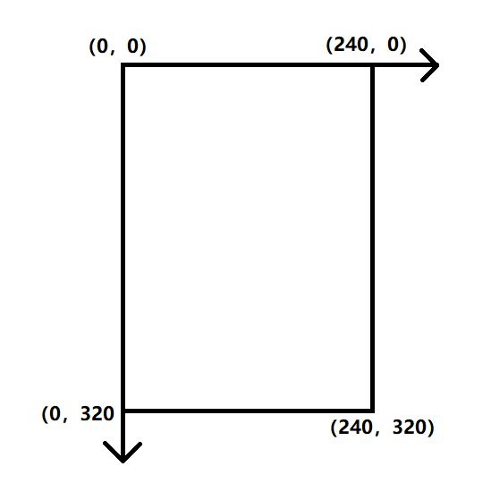
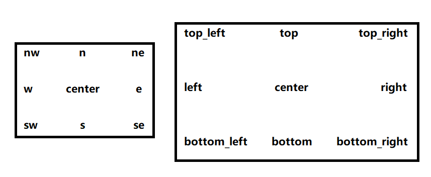
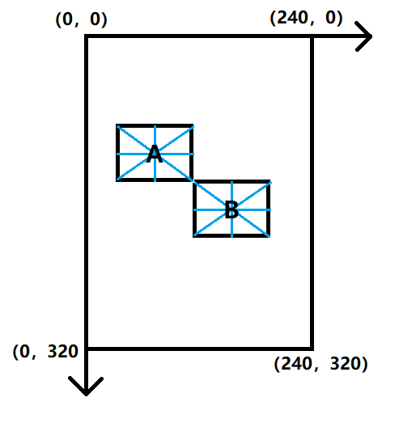

4 - unihiker库通用知识和功能
|- 4.1-坐标系
行空板屏幕分辨率为240x320，因此unihiker库分辨率也为240x320，坐标原点为屏幕左上角，向右为x轴正方向，向下为y轴正方向。

|- 4.2-对齐位置(基准点)origin
origin参数为了方便控件的对齐，控件有9个对齐位置点，可以采用东南西北（ESWN）和上下左右（top/bottom/left/right）两种方法标识。
| 方位 | 方法1 | 方法2 |
|---|---|---|
| 上/北 | n | top |
| 下/南 | s | bottom |
| 左/西 | w | left |
| 右/东 | e | right |
| 左上角/西北 | nw | top_left |
| 右上角/东北 | ne | top_right |
| 左下角/西南 | sw | bottom_left |
| 右下角/东南 | se | bottom_right |
| 中心 | center | center |
示意图：

效果案例：
A控件和B控件的x坐标与y坐标相同，A控件设置对齐位置为右下角，B控件设置对齐位置为左上角时的显示效果：

注意：仅部分控件存在此参数
|- 4.3-更新控件 config
语法：控件对象名.config(需要更新的参数名=值)
- 返回值： 无
- 输入参数： 需要更新的参数名=值
- 用法举例：
info_text.config(text="mouse:x=0,y=0")
|- 4.4-删除控件 remove
语法：控件对象名.remove()
- 返回值： 无
- 输入参数： 无
- 用法举例：
info_text.remove()
注1：对象被删除之后就不能进行config操作了，需要重新生成。如果只是临时想隐藏对象不在屏幕上显示，推荐使用config将对象的xy坐标设置到屏幕之外的方式实现效果。
注2：unihiker库从0.0.22开始推荐删除控件的使用方法为：
语法：GUI对象.remove(控件对象名)
- 返回值： 无
- 输入参数： 无
- 用法举例：
gui.remove(info_text)
|- 4.5-删除所有控件 clear
语法：GUI对象.clear()
- 返回值： 无
- 输入参数： 无
- 用法举例：
gui.clear()
注：对象被删除之后就不能进行config操作了，需要重新生成。如果只是临时想隐藏对象不在屏幕上显示，推荐使用config将对象的xy坐标设置到屏幕之外的方式实现效果。
|- 4.6-颜色 color
颜色可以使用三种方法表示：
- RGB值: color = (255,0,0)
- 16进制值: color = "#ff00ff"
- 固定颜色：color = "red"